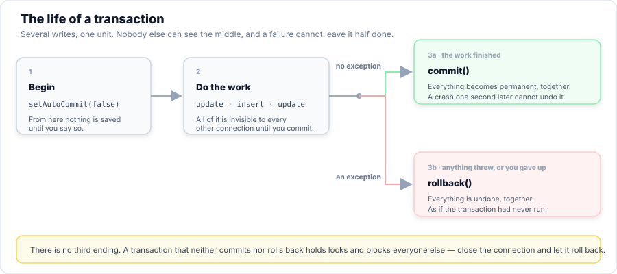
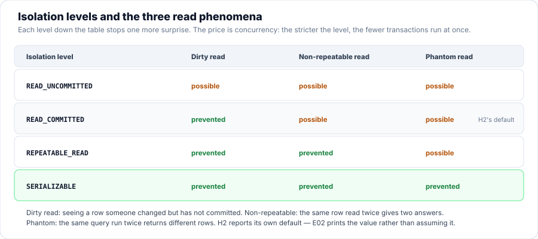
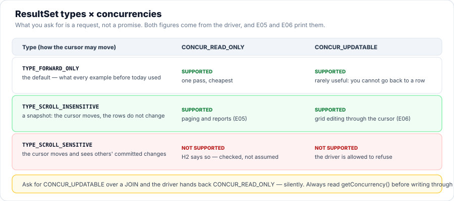

Session 8 — Advanced JDBC
Session 7 gave the registry a database. Today it gets something the registry needs the moment money is involved: transactions — the ability to say "all of this, or none of it". You will enrol students and take fees as single units of work, post payments that can be undone one at a time with savepoints, send whole batches in one round trip, page through a scrollable result, and meet stored procedures and RowSets. The thread through all of it: a database that always adds up.
- Explain what a transaction protects, using the transfer example, and name what each letter of ACID means.
- Distinguish auto-commit on from off, and predict what a
rollback()will do in each case. - Write a transactional method with
setAutoCommit(false),commit()and arollback()in the catch — and re-throw so the caller learns it failed. - Use a
Savepointto undo one item of a batch without losing the rest. - Read and set isolation levels, and say which of the three read phenomena each one permits.
- Batch many statements with
addBatch()/executeBatch(), and explain why a batch is not a transaction. - Move a cursor with
absolute(),relative()andprevious(), and page through a result. - Update a row through an updatable
ResultSet, and recognise when the driver silently downgrades it. - Call a stored routine with a
CallableStatement, and say what differs between H2 and Oracle. - Choose between a
JdbcRowSetand aCachedRowSet, and explain what "disconnected" buys you.
Your Roadmap for Today
Why This Matters
Every program you have written so far has a hidden assumption: that each statement is the whole job. Insert a row, that is a job. Update a row, that is a job. As long as every operation is one statement, that assumption holds, and you never have to think about it.
It breaks the moment a job needs two statements. Transfer money, and the debit and the credit are two writes. Enrol a student and take their fee, and that is two writes. If the process dies between them — a crash, a timeout, a bug — the database is left in a state nobody chose: money gone from one account and arrived nowhere, or a student enrolled who never paid. A transaction is how you say "these writes are one thing", so that the database can guarantee there is no moment at which half of it happened.
Part 1 of 9 Why Transactions Exist
A transaction is a group of statements the database treats as one. It either happens completely or not at all. Four properties are guaranteed, and the industry names them by their initials:
- A — Atomicity. All the statements, or none. The half-state cannot be observed.
- C — Consistency. The database moves from one valid state to another; constraints are never left violated.
- I — Isolation. Concurrent transactions do not see each other’s unfinished work.
- D — Durability. Once committed, it survives a crash — that is what the log on disk is for.
In JDBC, a transaction is not something you create; it is something you stop the database from ending prematurely. By default every statement is its own transaction. Turning auto-commit off is what lets several statements be one.

Figure 1 — one unit of work, two possible endings. There is no third.
Part 2 of 9 Transactions in JDBC
The scenario is enrolling a student and taking their fee. Two rows go in — an
enrolments row and a fee_payments row. The program below does it twice: once
with auto-commit left on, and once inside a transaction, and in both cases the second write is made to
fail on purpose. The difference in what is left in the table is the entire argument for the four-line
pattern.
Here is that pattern, which every transactional method in this session uses. Read the four steps and notice the last one: the catch re-throws. A method that rolls back and then returns normally has lied to its caller — it reported success for an operation that failed.
public static <T> T inTransaction(Work<T> work) throws SQLException {
try (Connection c = open()) {
boolean originalAutoCommit = c.getAutoCommit();
c.setAutoCommit(false);
try {
T result = work.run(c);
c.commit();
return result;
} catch (SQLException | RuntimeException e) {
c.rollback();
throw e;
} finally {
c.setAutoCommit(originalAutoCommit);
}
}
}Catching the exception, rolling back, and then returning as if nothing happened. The database is correct — the work was undone — but the caller believes it succeeded and carries on. Fault 2 in Practice 3 shows exactly this: the failure is caught, swallowed, and the program reports success. Roll back and re-throw. Every time.
Auto-commit, and what it actually controls
getAutoCommit() is the setting behind all of this. Turning it off does not merely "start a
transaction" — it changes what each statement means, from a complete job to a step in one.
E02 proves it by inserting a row with auto-commit on, calling rollback(), and
finding the row still there.
Part 3 of 9 Savepoints: Undoing Part of a Transaction
A transaction has two endings — all of it or none of it. But real work is often a batch of separate items: a term’s fee postings, a file of rows being imported, a run of payments. If one item is bad, throwing away the whole transaction means redoing the good ones by hand.
A savepoint is a bookmark inside the transaction. rollback(point) rewinds to
that bookmark, not to the beginning, so everything before it survives and everything after it is undone.
The outer commit() still decides whether any of it is kept.
E03 posts five payments against one enrolment. The third is negative, which the rule forbids.
Watch the four good ones survive it.
The shape to copy is small, and the finally is not optional: releasing the savepoint on
every path stops them piling up inside a long transaction.
for (int i = 0; i < amounts.length; i++) {
double amount = amounts[i];
// The bookmark: everything before this stays if this item fails.
Savepoint point = c.setSavepoint("payment-" + (i + 1));
System.out.printf(" payment %d (%.2f) ... ", i + 1, amount);
try {
insertPayment(c, 3, amount);
posted++;
System.out.println("posted");
} catch (SQLException e) {
System.out.println("REJECTED -> rolling back to the savepoint");
c.rollback(point);
System.out.println(" reason: " + firstLine(e.getMessage()));
} finally {
c.releaseSavepoint(point);
}
}commit() still governs all of it. A savepoint only decides how far back a
rollback goes. The distinction matters: students who think a savepoint saves their work
write code that loses it.
Part 4 of 9 Isolation Levels
E01 and E03 each used one connection, so isolation never came up. It only matters when two transactions run at the same time, and it answers a question you have to decide deliberately: how much of each other’s unfinished work may they see?
The industry names the levels after the three things that can go wrong when they see too much. Learn the three phenomena first; the level names then read themselves.
- Dirty read. You read a row another transaction has changed but not yet committed. If that transaction rolls back, you acted on a value that never existed.
- Non-repeatable read. You read the same row twice inside one transaction and get two different answers, because someone else committed a change in between.
- Phantom read. You run the same query twice and get a different set of rows — someone inserted or deleted one that matches.

Figure 2 — each level down the table stops one more surprise, and costs concurrency.
Read the diagram as a trade, not a ranking. Every step down is safer and slower, because the database must
hold more locks or do more checking to keep its promise. E02 reads this database’s own
default and then tries each level in turn — the numbers below are what H2 reported, not what a
textbook says it should.
// ---- isolation levels ----
System.out.println(Db.rule("isolation levels"));
DatabaseMetaData md = c.getMetaData();
System.out.println(" this database's DEFAULT is: " + nameOf(c.getTransactionIsolation()));
System.out.println();
int[] levels = {
Connection.TRANSACTION_READ_UNCOMMITTED,
Connection.TRANSACTION_READ_COMMITTED,
Connection.TRANSACTION_REPEATABLE_READ,
Connection.TRANSACTION_SERIALIZABLE,
};
for (int level : levels) {
int previous = c.getTransactionIsolation();
try {
c.setTransactionIsolation(level);
System.out.printf(" %-22s supported (set ok)%n", nameOf(level));
} catch (SQLException e) {
System.out.printf(" %-22s NOT supported: %s%n", nameOf(level), firstLine(e.getMessage()));
} finally {
c.setTransactionIsolation(previous);The default was chosen by people who know the database. Lowering the level to make a slow query fast trades correctness for speed, and the bug it introduces — a stale read, a duplicated row — will surface months later in a report nobody can reproduce. Raise or lower it only when you can say which of the three phenomena you are trying to prevent and why the default is not enough.
One thing worth knowing: on most databases READ_COMMITTED is the default, and
H2 reports exactly that — E02 prints it. Print the value; never assume it.
Part 5 of 9 Batch Updates
Loading a file of two thousand rows one executeUpdate() at a time means two thousand
separate calls to the database. addBatch() queues a statement instead of running it;
executeBatch() sends the whole queue in one call and returns a count for each statement.
E04 inserts the same two thousand rows three ways and times each. Read the numbers, then read
the part underneath them — because the interesting result is not the one people expect.
Here is the third mode, the one that wins. Notice how little it takes: addBatch() in the loop,
one executeBatch(), and setAutoCommit(false) with a single commit()
at the end.
private static void insertBatched(Connection c, String insert, boolean autoCommit) throws SQLException {
if (!autoCommit) c.setAutoCommit(false);
try (PreparedStatement ps = c.prepareStatement(insert)) {
for (int i = 1; i <= ROWS; i++) {
ps.setString(1, "batched-" + i);
ps.setDouble(2, i);
ps.addBatch(); // queue it
}
ps.executeBatch(); // send them all
if (!autoCommit) c.commit(); // one commit for 2000 inserts
} finally {
if (!autoCommit) c.setAutoCommit(true);
}
}
This is the trap the second half of E04 springs. When a batch fails partway,
BatchUpdateException.getUpdateCounts() reports what already ran — in the run above,
[1, 1, 1, -3]: three succeeded, the fourth failed. Without a transaction around it,
those three are already in the table. The program then reports a failure while leaving
half the data behind.
Wrap the batch in a transaction and the same failure leaves nothing. Speed and safety are separate tools, and a batch is only the speed one.
Part 6 of 9 Scrollable & Updatable Result Sets
Every ResultSet you have written since Session 7 has been read one way: forwards, once, with
while (rs.next()). That is the default type, TYPE_FORWARD_ONLY, and it is the
cheapest one — the database can stream rows and forget them.
Ask for a different type and you get a cursor you can move by hand: first(),
last(), absolute(n), relative(n), previous(). That is
what a table on screen needs when the user clicks last page or jumps to row 500. You also choose a
concurrency: read-only, or updatable, which lets you edit the row under the cursor and
write it back with updateRow().

Figure 3 — what you ask for is a request. What you get is whatever the driver grants.
E05 asks the database what it supports, opens a scrollable cursor over the eight seeded
students, and walks it around — then does the thing this is really for: prints them three to a page.
The whole difference is the two arguments to createStatement(). Everything after that is a
cursor you drive yourself.
try (Statement st = c.createStatement(
ResultSet.TYPE_SCROLL_INSENSITIVE, ResultSet.CONCUR_READ_ONLY);
ResultSet rs = st.executeQuery("SELECT id, name, mark FROM students ORDER BY id")) {
System.out.println(" type: " + typeName(rs.getType()));
if (rs.last()) {
System.out.println(" last() -> id " + rs.getInt("id") + ", " + rs.getString("name")
+ " (there are " + rs.getRow() + " rows)");
}
if (rs.first()) {
System.out.println(" first() -> id " + rs.getInt("id") + ", " + rs.getString("name"));
}
if (rs.absolute(3)) {
System.out.println(" absolute(3) -> id " + rs.getInt("id") + ", " + rs.getString("name")
+ " (jump straight to row 3)");
}
if (rs.relative(2)) {
System.out.println(" relative(2) -> id " + rs.getInt("id") + ", " + rs.getString("name")
+ " (two rows on from row 3)");
}
if (rs.previous()) {
System.out.println(" previous() -> id " + rs.getInt("id") + ", " + rs.getString("name")
+ " (back one)");
}
Now the second half. E06 asks for the same scrollable cursor but this time
CONCUR_UPDATABLE, and edits the row the cursor is sitting on.
updateRow() writes the row under the cursor; moveToInsertRow() plus
insertRow() builds a new one; deleteRow() removes it. Notice that
E06 prints the table with a plain SELECT after each change — so you can
check the cursor really did reach the database, rather than only the object in memory.
// ---- UPDATE a row through the cursor ----
System.out.println(Db.rule("updateRow - change the row under the cursor"));
if (rs.absolute(3)) {
System.out.println(" row 3 before: " + rs.getString("name") + " / " + rs.getDouble("mark"));
rs.updateDouble("mark", 82.75);
rs.updateRow(); // writes it back
System.out.println(" updateDouble(\"mark\", 82.75) + updateRow()");
System.out.println(" row 3 after : " + rs.getString("name") + " / " + rs.getDouble("mark")
+ " (read back through the same cursor)");
}
// ---- INSERT a new row ----
System.out.println(Db.rule("insertRow - build a row, then move it into the table"));
rs.moveToInsertRow(); // a blank staging row
rs.updateInt("id", 4);
rs.updateString("name", "Katherine Johnson");
rs.updateDouble("mark", 95.75);
rs.insertRow();
rs.moveToCurrentRow(); // come back to where we were
System.out.println(" inserted id 4: Katherine Johnson / 95.75");
At the end of E06 the same request is made over a JOIN — and the
driver hands back CONCUR_READ_ONLY without an error, without a warning, and without
telling anyone. It is being reasonable: a joined row has no single table to write back to.
The lesson is not "avoid joins". The lesson is that the type and concurrency you asked for are
what you asked for, not what you got. If your code is going to write through the cursor, check
rs.getConcurrency() first. This is the first of three places today where the honest answer
is "test it and read what the driver says".
Part 7 of 9 Stored Procedures
A stored procedure is a routine that lives inside the database and runs there. An
organisation uses them for three reasons: the business rule sits in one place instead of in ten
programs; one CALL can do the work of several round trips; and you can grant permission to
call a procedure without granting access to the tables it touches.
From Java, a stored routine is called with a CallableStatement. The shape is the same one
used against Oracle or SQL Server:
CallableStatement cs = c.prepareCall("{ ? = call FEEWITHTAX(?) }");
cs.registerOutParameter(1, Types.DOUBLE); // the ? on the left receives the result
cs.setDouble(2, 380.00); // the argument
cs.execute();
double answer = cs.getDouble(1);
There is a genuine wrinkle here, and it is worth facing rather than hiding. Oracle, SQL Server and
PostgreSQL each have a procedural language — PL/SQL, T-SQL, PL/pgSQL — in which you write the
body of the procedure in SQL. H2 does not. H2 has no PL/SQL at all. What it gives you
instead is CREATE ALIAS, which exposes an ordinary Java static method as if
it were a database function.
Those two methods are the routines E07 registers. Read the second one carefully: H2 passes the
Connection in as the first parameter, so an alias can run its own queries — which is
exactly what a stored procedure does.
/** An H2 alias body: an ordinary static Java method, exposed to SQL by CREATE ALIAS. */
public static double feeWithTax(double fee) {
return Math.round(fee * 1.10 * 100.0) / 100.0;
}
/** A second alias: total paid against an enrolment id, seeing the database itself. */
public static double totalPaidFor(Connection c, int enrolmentId) throws SQLException {
// H2 can pass the Connection as the first parameter of an alias - so a
// "procedure" can run its own queries, exactly like a stored procedure would.
try (var ps = c.prepareStatement(
"SELECT COALESCE(SUM(amount), 0) FROM fee_payments WHERE enrolment_id = ?")) {
ps.setInt(1, enrolmentId);
try (ResultSet rs = ps.executeQuery()) {
rs.next();
return rs.getDouble(1);
}
}
}
DatabaseMetaData.supportsStoredProcedures() returned false, and the very
next line called a routine successfully. That is not a contradiction; the flag answers a narrower
question than the name suggests — "do you have Oracle-style PL/SQL procedures?" —
and H2 honestly says no.
Careful readers are entitled to ask which answer to trust. The answer is the one you can run. A flag tells you what the driver claims; a program that runs tells you what the database does. When you meet the two disagreeing in your own work, write the two-line program.
The call is portable: { ? = call name(?) } is the same string in Java
against Oracle, SQL Server and H2. The CREATE is not —
CREATE ALIAS ... FOR 'com.aptech...' is H2-only, and the same routine on Oracle would be
written in PL/SQL.
And the honest trade: business logic inside the database is harder to unit-test, harder to version control, and harder to deploy than logic in your Java. Plenty of teams keep their procedures thin on purpose. Know what the tool is for before you reach for it — "the database can do it" is not the same as "the database should".
Part 8 of 9 JDBC 4.3 Enhancements
JDBC 4.3 arrived with Java 9, and it added four things. Knowing the list is not the lesson; knowing what the list is for is.
ShardingKeyandShardingKeyBuilder— a sharding key names which physical server a connection belongs to, when one logical database is split across many machines.beginRequest()/endRequest()— brackets around a unit of work, so a driver or pool can route it better.setShardingKey()onConnectionandConnectionBuilder— the direct form of the same idea.- The
ConnectionBuilderfamily — build aConnectionwithoutDriverManager, usually because a pool owns the physical connections and your code borrows one.
Notice the direction of travel: every one of these exists for large, pooled, multi-node systems.
This course's database is a single file in the same process, so none of them will appear in your work this
term — and E09 says so plainly while still asking the driver about each one.
There is one detail in that program worth copying into your habits. createShardingKeyBuilder()
is not on Connection — it is on
java.sql.CommonDataSource. Ask a Connection for it and your code will not
compile.
java.sql.ShardingKey key = null;
try {
javax.sql.DataSource ds = new org.h2.jdbcx.JdbcDataSource();
ShardingKeyBuilder builder = ds.createShardingKeyBuilder();
System.out.println(" DataSource.createShardingKeyBuilder() -> " + builder.getClass().getName());
builder.subkey("student-1", java.sql.JDBCType.VARCHAR);
key = builder.build();
System.out.println(" built a ShardingKey -> " + key);
} catch (SQLFeatureNotSupportedException e) {
System.out.println(" createShardingKeyBuilder() -> NOT supported by this driver");
} catch (SQLException e) {
System.out.println(" createShardingKeyBuilder() -> threw " + firstLine(e.getMessage()));
}
setShardingKey has been on the java.sql.Connection interface since Java 9.
It is right there in the API documentation. And it threw
SQLFeatureNotSupportedException: setShardingKey not implemented.
This is not an H2 flaw — a single-file database has no shards, so there is nothing to
implement. It is a fact of life you will meet again with other drivers and other methods: the
interface shipped before every database caught up. The habit that saves you is the one E09
demonstrates: call it inside a try, catch SQLFeatureNotSupportedException, and
read what the driver said — then design around what it actually does.
Part 9 of 9 RowSets
A ResultSet is chained to its open Connection. Close the connection and the rows
are gone. That is a real problem for a desktop application: you do not want your table view holding a
database connection open while the user has a cup of tea.
A RowSet is a ResultSet that is also a JavaBean — so it can be created
with no connection, configured with setters, filled on demand, and read long after the connection closed.
You get one from a RowSetFactory, which you get from RowSetProvider. That
two-step exists so the provider can be swapped — by an application server, by a driver —
without your code changing.
RowSetFactory factory = RowSetProvider.newFactory();
try (JdbcRowSet jrs = factory.createJdbcRowSet()) { // still connected
jrs.setUrl(Db.H2_URL);
jrs.setUsername("sa");
jrs.setPassword("");
jrs.setCommand("SELECT id, name FROM students WHERE mark >= ?");
jrs.setDouble(1, 85.0);
jrs.execute(); // no Connection in sight
while (jrs.next()) { ... }
}| RowSet | Connected? | Reach for it when… |
|---|---|---|
JdbcRowSet | yes | you want a ResultSet with setters and a command of its own. |
CachedRowSet | no | the rows must outlive the connection — a UI, a report, another thread. |
WebRowSet | no | the rows must travel as XML. |
FilteredRowSet | no | one cached result with several filtered views of it. |
JoinRowSet | no | join several cached results without going back to the database. |
E08 runs through them: a JdbcRowSet with its own URL and query, a
CachedRowSet read after its connection was closed, a cache edited and written back,
and a WebRowSet printed as XML.
The part worth studying is the write-back, because it shows the cache and the table are genuinely
separate things. The change goes into memory first, the database is asked what it thinks, and only
acceptChanges() makes them agree.
editable.absolute(topRow);
System.out.println(" highest mark: " + topName + " / " + topMark);
editable.updateDouble("mark", 99.00);
editable.updateRow(); // the change is in the CACHE, not the database
System.out.println(" updated the cache to 99.00 - the database does not know yet");
System.out.println(" database still says: " + markOf(topId)
+ " <- proof the cache and the table are separate");
try (Connection back = Db.open()) {
editable.acceptChanges(back); // now push the cache back to the database
System.out.println(" acceptChanges(connection) wrote the change through");
} catch (SQLException e) {
System.out.println(" acceptChanges failed: " + Db.firstLine(e));
}
System.out.println(" database now says : " + markOf(topId));CachedRowSet that writes back needs a plain command
This one cost a real debugging session while this page was being written, and the error message does
not name the cause. The JDK's CachedRowSetWriter builds its UPDATE by
appending WHERE id = ? to the command you gave it. Give it a command that
already ends in ORDER BY mark DESC and you get:
SELECT ID, NAME, MARK FROM REGISTRY.PUBLIC.students ORDER BY mark DESC [*]WHERE ID = ?
^ not valid SQL
The command must be a plain SELECT <columns> FROM <table> — no
ORDER BY, no WHERE. Read-only caches can have either; the moment you intend
to write back, keep it simple and sort or filter in Java.
🛠 Guided Lab — The Fee Ledger
The registry has money in it now, and money is where transactions stop being theory. In this lab you post a term’s enrolments and fees as real units of work, and every step uses a tool from Parts 1 to 4.
Open code/s08-advanced-jdbc and read
src/main/java/com/aptech/s08/lab/FeeLedger.java. It has four steps:
- Enrol and pay, atomically. Insert an
enrolmentsrow, insert afee_paymentsrow, set the paid flag — then commit. Three writes, one unit. - Make the payment fail. The same method again with a negative fee. The enrolment is written, the payment is refused, and the rollback takes both away.
- Post a batch with a savepoint. Four payments, one of them invalid. Three survive.
- Reconcile. Every enrolment against its course fee, with the paid flag checked against the arithmetic.
Run it from the project folder — the database is a file in ./data/, and it is reset to
the seed data at the start, so your output will match this exactly.
The method STEP 1 and STEP 2 both call
This is the whole session in fifteen lines. Read it top to bottom: auto-commit off, the three writes, the
commit, and then the two lines in the catch — rollback() and throw.
Take the throw away and STEP 2 would report success for a failure.
int enrolAndPay(int studentId, int courseId, double fee) throws SQLException {
c.setAutoCommit(false);
try {
int enrolmentId = insertEnrolment(c, studentId, courseId);
insertPayment(c, enrolmentId, fee);
markPaid(c, enrolmentId);
c.commit();
return enrolmentId;
} catch (SQLException e) {
c.rollback();
throw e;
} finally {
c.setAutoCommit(true);
}
}STEP 3, the savepoint
One savepoint per payment. The good ones stay, the bad one is undone, and the whole thing is still
one transaction — so the final commit() is what makes any of it real.
try {
for (double amount : amounts) {
Savepoint point = c.setSavepoint("payment");
try {
insertPayment(c, enrolmentId, amount);
posted++;
} catch (SQLException e) {
System.out.println(" rejected " + Db.money(amount) + ": " + firstLine(e.getMessage()));
c.rollback(point);
} finally {
c.releaseSavepoint(point);
}
}
// If everything posted, the enrolment is now settled.
markPaidIfSettled(c, enrolmentId);
c.commit();
return posted;Three changes worth making, in rising order of difficulty:
- Print the
enrolmentscount inside STEP 2, before the rollback, so you can see the row that is about to vanish. Nothing else proves as clearly that the row existed and was undone. - Change STEP 1 so the student is already enrolled on that course. H2 will refuse the duplicate; make the program report it as a message rather than a stack trace.
- Add a STEP 5 that posts a payment and updates a running total in a second table, both in one transaction. Then break the update on purpose and prove no payment was recorded.
⚠️ Common Mistakes
Every one of these was produced by running the code on this page. The error text is copied from the runs, not invented.
c.setAutoCommit(true); // the default, and the bug
insert(c, "leaked-1");
insert(c, "leaked-2");
throw new SQLException("third step failed");
// catch: c.rollback(); <- and the two rows are still thereWhat the run printed:
before: 0, after: 2 -> 2 row(s) leaked past a rollback
Why it is dangerous: nothing throws. rollback() runs without error and
does nothing, so the code reads as correct. Fix: if a job has more than one write,
setAutoCommit(false) first. That is the whole of it.
try {
insert(c, "will-not-be-rolled-back");
throw new SQLException("a real failure");
} catch (SQLException e) {
// caught and ignored - no rollback, and the caller is told nothing
}
c.commit(); // and this commits the half-done workWhat the run printed:
broken: the caller thinks it succeeded; the row is in the table
Why it is dangerous: the database is wrong and the caller is misinformed — the worst of both. A transaction that fails silently is worse than no transaction, because you trusted it. Fix: roll back and re-throw, every time.
ps.addBatch(); // rows 1, 2, 3 - all fine
ps.addBatch(); // row 4 - too long for the column, so it fails here
ps.executeBatch();What the run printed:
updateCounts() -> [1, 1, 1, -3] and then
rows before: 0, after: 3 <-- the three good ones STAYED
Why it is dangerous: the method throws, so you write a catch and move
on — while three rows sit in the table. Fix: the batch inside a transaction, with
rollback() in the catch. The same failing batch then printed
rows before: 3, after: 3.
CachedRowSet a command with ORDER BY
cached.setCommand("SELECT id, name, mark FROM students ORDER BY mark DESC");
// ... later ...
cached.acceptChanges(connection);What the run printed: an H2 syntax error pointing at
... ORDER BY mark DESC [*]WHERE ID = ?
Why it is dangerous: the message names SQL you never wrote. The JDK’s writer
appended WHERE id = ? to your whole command, including the sort. Fix: a
plain SELECT <columns> FROM <table>. Sort it yourself, in Java.
c.createShardingKeyBuilder(); // does not compile - that method is on DataSource
c.setShardingKey(key); // compiles, and then:
// SQLFeatureNotSupportedException: setShardingKey not implementedWhat the run printed:
setShardingKey(key) -> NOT supported by this driver
Why it is dangerous: reading the API documentation is not the same as knowing what
your driver does. Neither is reading supportsStoredProcedures(), which said
false while a routine ran two lines later. Fix: wrap it in a
try, catch SQLFeatureNotSupportedException, and print what the driver said.
🧠 Knowledge Check
Ten questions on transactions and the rest of today. If you disagree with one, argue it — that is a code review.
begin(). Turning auto-commit off is what makes several statements one unit.rollback() undo?SQLException, rolls back, and returns normally. What is wrong?rollback(savepoint) do?commit() still governs all of it.READ_COMMITTED prevent?getUpdateCounts() returned [1, 1, 1, -3]: three done, one failed. Wrap the batch in a transaction if half a load is unacceptable.TYPE_SCROLL_INSENSITIVE, CONCUR_UPDATABLE over a two-table JOIN. What do you get?rs.getConcurrency() before you try to write through a cursor.{ ? = call FEEWITHTAX(?) }, what does the first ? hold?= is the OUT parameter, right is the IN argument. Register the OUT one before you execute.CachedRowSet?close() — and acceptChanges() writes edits back when you are ready.💪 Practice
Three programs, in rising order. Run each one; every output below is reproducible.
🌱 Easy: prove that a rollback undoes and a commit keeps
Write the smallest program that shows the difference. Insert a row with auto-commit off, call
rollback(), and check it is gone. Insert another, commit(), and check it is
still there. Nothing here is new — it is E01 and E02 with the training wheels off.
💡 Hint
You need a scratch table, since you will be writing and unwriting rows. Use a count() helper that runs a fresh SELECT COUNT(*) — reading the count from the database proves what the database holds, not what your program intended.
✅ Solution
package com.aptech.s08.practice;
import java.sql.Connection;
import java.sql.PreparedStatement;
import java.sql.ResultSet;
import java.sql.SQLException;
import java.sql.Statement;
import com.aptech.s08.Db;
/**
* PRACTICE 1 (Easy) — prove that a rollback undoes a write, and a commit does not.
*
* <p>Write the smallest program that shows the difference. Insert a row with auto-commit off,
* roll back, and check it is gone; insert another, commit, and check it is still there. Nothing
* here is new — it is E01 and E02 with the training wheels off.
*
* <p><strong>Expected output:</strong> the first row is gone after the rollback, the second
* survives the commit.
*/
public class P1_RollbackOrCommit {
public static void main(String[] args) throws SQLException {
System.out.println("P1 - a rollback undoes, a commit keeps");
try (Connection c = Db.open()) {
try (Statement st = c.createStatement()) {
st.execute("DROP TABLE IF EXISTS p1_demo");
st.execute("CREATE TABLE p1_demo (id INT GENERATED BY DEFAULT AS IDENTITY PRIMARY KEY,"
+ " label VARCHAR(40))");
}
// ---- rollback ----
c.setAutoCommit(false);
try (PreparedStatement ps = c.prepareStatement("INSERT INTO p1_demo (label) VALUES (?)")) {
ps.setString(1, "should-vanish");
ps.executeUpdate();
}
System.out.println(" inserted 'should-vanish', then rollback()...");
c.rollback();
System.out.println(" rows now: " + count(c) + " <- the rollback undid it");
// ---- commit ----
try (PreparedStatement ps = c.prepareStatement("INSERT INTO p1_demo (label) VALUES (?)")) {
ps.setString(1, "should-stay");
ps.executeUpdate();
}
System.out.println(" inserted 'should-stay', then commit()...");
c.commit();
System.out.println(" rows now: " + count(c) + " <- the commit kept it");
c.setAutoCommit(true);
try (Statement st = c.createStatement();
ResultSet rs = st.executeQuery("SELECT label FROM p1_demo")) {
while (rs.next()) System.out.println(" in the table: " + rs.getString("label"));
}
try (Statement st = c.createStatement()) {
st.execute("DROP TABLE p1_demo");
}
}
System.out.println("\nrollback() rewinds to the last commit. commit() makes it permanent.");
}
private static int count(Connection c) throws SQLException {
try (Statement st = c.createStatement();
ResultSet rs = st.executeQuery("SELECT COUNT(*) FROM p1_demo")) {
rs.next();
return rs.getInt(1);
}
}
}💪 Medium: a transfer that must not half-happen
Move a balance from one account to another inside one transaction, and prove the invariant that matters: the total across both accounts never changes. Then make the second update fail on purpose and show the total is still intact.
This is the textbook transaction example, and it is worth doing by hand once — so that the lab’s fee posting is not the first time you have seen it.
💡 Hint
Check the balance inside the transaction and throw if it is too low. The throw is what makes the rollback happen — put the rollback() in the catch, then re-throw. Print the total before and after; if your transaction is right, it never moves.
✅ Solution
package com.aptech.s08.practice;
import java.sql.Connection;
import java.sql.PreparedStatement;
import java.sql.ResultSet;
import java.sql.SQLException;
import java.sql.Statement;
import com.aptech.s08.Db;
/**
* PRACTICE 2 (Medium) — a transfer: two updates that must both happen, or neither.
*
* <p>Move a balance from one account to another inside one transaction, and prove the invariant
* that matters: <strong>the total across both accounts never changes.</strong> Then deliberately
* make the second update fail and show the total is still intact — because the first one was
* rolled back.
*
* <p>This is the textbook transaction example, and it is worth doing once by hand so that the
* lab's fee posting is not the first time you have seen it.
*
* <p><strong>Expected output:</strong> the transfer succeeds and the total is unchanged; the
* failed transfer leaves both balances exactly where they were.
*/
public class P2_AtomicTransfer {
public static void main(String[] args) throws SQLException {
System.out.println("P2 - a transfer that must not half-happen");
try (Connection c = Db.open()) {
try (Statement st = c.createStatement()) {
st.execute("DROP TABLE IF EXISTS accounts");
st.execute("CREATE TABLE accounts (id INT PRIMARY KEY, name VARCHAR(40), balance DECIMAL(9,2))");
st.executeUpdate("INSERT INTO accounts VALUES "
+ "(1, 'Ada', 500.00),"
+ "(2, 'Grace', 300.00)");
}
double totalBefore = total(c);
System.out.println(Db.rule("before"));
print(c, " ");
System.out.printf(" total: %.2f%n", totalBefore);
// ---- a transfer that works ----
System.out.println(Db.rule("transfer 120.00 from Ada to Grace - one transaction"));
transfer(c, 1, 2, 120.00);
print(c, " ");
System.out.printf(" total: %.2f (unchanged: %.2f)%n", total(c), totalBefore);
// ---- a transfer that fails halfway ----
System.out.println(Db.rule("transfer 9999.00 - more than Ada has, so it must fail"));
double before = total(c);
try {
transferStrict(c, 1, 2, 9999.00); // refuses to go negative, mid-transaction
} catch (SQLException e) {
System.out.println(" transfer refused: " + firstLine(e.getMessage()));
}
print(c, " ");
System.out.printf(" total: %.2f (still %.2f - the debit was rolled back)%n", total(c), before);
System.out.println(Db.rule("why this is the whole point"));
System.out.println(" The debit and the credit are two statements. Without a transaction,");
System.out.println(" a failure between them destroys money - the debit stands and the");
System.out.println(" credit never arrives. The invariant 'the total is constant' is what a");
System.out.println(" transaction is protecting, and it is what you assert in a test.");
try (Statement st = c.createStatement()) {
st.execute("DROP TABLE accounts");
}
}
System.out.println("\nTwo writes, one unit. The total across the pair never changes by accident.");
}
/** Moves money, refusing to overdraw. The refusal happens inside the transaction, so it rolls back. */
static void transfer(Connection c, int from, int to, double amount) throws SQLException {
transferStrict(c, from, to, amount); // allow the same code to throw for the failing case
}
static void transferStrict(Connection c, int from, int to, double amount) throws SQLException {
c.setAutoCommit(false);
try {
double fromBalance = balance(c, from);
if (amount > fromBalance) {
throw new SQLException("insufficient funds: " + Db.money(fromBalance)
+ " available, " + Db.money(amount) + " requested");
}
credit(c, from, -amount); // debit
credit(c, to, +amount); // credit
c.commit();
} catch (SQLException e) {
c.rollback();
throw e;
} finally {
c.setAutoCommit(true);
}
}
private static void credit(Connection c, int id, double delta) throws SQLException {
try (PreparedStatement ps = c.prepareStatement(
"UPDATE accounts SET balance = balance + ? WHERE id = ?")) {
ps.setDouble(1, delta);
ps.setInt(2, id);
ps.executeUpdate();
}
}
private static double balance(Connection c, int id) throws SQLException {
try (PreparedStatement ps = c.prepareStatement("SELECT balance FROM accounts WHERE id = ?")) {
ps.setInt(1, id);
try (ResultSet rs = ps.executeQuery()) {
return rs.next() ? rs.getDouble(1) : 0;
}
}
}
private static double total(Connection c) throws SQLException {
try (Statement st = c.createStatement();
ResultSet rs = st.executeQuery("SELECT COALESCE(SUM(balance),0) FROM accounts")) {
rs.next();
return rs.getDouble(1);
}
}
private static void print(Connection c, String indent) throws SQLException {
try (Statement st = c.createStatement();
ResultSet rs = st.executeQuery("SELECT name, balance FROM accounts ORDER BY id")) {
while (rs.next()) {
System.out.printf("%s%-8s %9.2f%n", indent, rs.getString("name"), rs.getDouble("balance"));
}
}
}
private static String firstLine(String message) {
return Db.firstLine(message);
}
}🏆 Challenge: three transaction faults, and the fix for each
Each fault below runs broken, prints the damage, then runs fixed and prints the difference. Write all three, and make your output show the damage the way this one does — a fault you cannot see is a fault you will ship.
- Auto-commit left on. A “failed” operation has already left rows behind.
- The exception swallowed. The rollback never runs and success is reported for a failure.
- One bad item throws away the whole batch. Four good records lost to discard one bad one — fixed with a savepoint.
💡 Hint
Fault 2 is the subtle one, because it does not produce a wrong number — it produces a wrong report. To make it visible, have the broken version tell the caller “done” and let the fixed version hand the exception up to main, which prints it. The difference between the two runs is the whole lesson.
✅ Solution
package com.aptech.s08.practice;
import java.sql.Connection;
import java.sql.PreparedStatement;
import java.sql.ResultSet;
import java.sql.SQLException;
import java.sql.Savepoint;
import java.sql.Statement;
import com.aptech.s08.Db;
/**
* PRACTICE 3 (Challenge) — three faults around transactions, and the fix for each.
*
* <pre>
* FAULT 1 work committed statement-by-statement because auto-commit was left on
* symptom: a "failed" operation has already left rows behind
*
* FAULT 2 the exception swallowed, so the caller is told it worked
* symptom: the rollback never runs and success is reported for a failure
*
* FAULT 3 one bad item throwing away a whole batch
* symptom: four good records lost to discard one bad one - fixed with a savepoint
* </pre>
*
* <p>Each fault runs broken, prints the damage, then runs fixed and prints the difference.
*
* <p><strong>Expected output:</strong> fault 1 leaks a row, fault 2 reports a false success,
* fault 3 loses three good rows — and each fixed version avoids its damage.
*/
public class P3_TransactionFaults {
public static void main(String[] args) throws SQLException {
System.out.println("P3 - three transaction faults, and the fix for each");
try (Connection c = Db.open()) {
prepare(c);
fault1(c);
try {
fault2(c);
} catch (SQLException e) {
System.out.println(" the caller received: " + Db.firstLine(e));
System.out.println(" -> the failure reached the top. That IS the fix: the caller");
System.out.println(" now knows the work was undone and can tell the user.");
}
fault3(c);
try (Statement st = c.createStatement()) {
st.execute("DROP TABLE p3_demo");
}
}
System.out.println("\nEvery fault here still compiles and still runs. That is why they ship.");
}
// ========================================================================
// FAULT 1 — auto-commit left on
// ========================================================================
private static void fault1(Connection c) throws SQLException {
System.out.println(Db.rule("FAULT 1 - auto-commit left on"));
int before = count(c);
c.setAutoCommit(true); // BROKEN: the default, and the mistake
try {
insert(c, "leaked-1");
insert(c, "leaked-2");
throw new SQLException("pretend the third step failed");
} catch (SQLException e) {
c.rollback(); // does nothing: each INSERT was already committed
}
int after = count(c);
System.out.println(" before: " + before + ", after: " + after
+ (after > before ? " -> " + (after - before) + " row(s) leaked past a rollback" : ""));
// FIXED
c.setAutoCommit(false);
int beforeFixed = count(c);
try {
insert(c, "temp-1");
insert(c, "temp-2");
throw new SQLException("third step fails again");
} catch (SQLException e) {
c.rollback(); // now this actually works
} finally {
c.setAutoCommit(true);
}
System.out.println(" fixed : before: " + beforeFixed + ", after: " + count(c)
+ " -> nothing leaked");
}
// ========================================================================
// FAULT 2 — the exception is swallowed
// ========================================================================
private static void fault2(Connection c) throws SQLException {
System.out.println(Db.rule("FAULT 2 - the exception swallowed, success reported"));
// BROKEN
c.setAutoCommit(false);
try {
insert(c, "will-not-be-rolled-back");
throw new SQLException("a real failure");
} catch (SQLException e) {
// BROKEN: caught and ignored. No rollback, no report to the caller.
System.out.println(" broken: caught the failure and said nothing");
}
c.commit(); // commits the half-done work
c.setAutoCommit(true);
System.out.println(" broken: the caller thinks it succeeded; the row is in the table");
// FIXED
c.setAutoCommit(false);
try {
insert(c, "rolled-back");
throw new SQLException("a real failure");
} catch (SQLException e) {
c.rollback();
c.setAutoCommit(true);
System.out.println(" fixed : caught it, rolled back, and will re-throw to the caller");
throw new SQLException("propagated: " + firstLine(e.getMessage()));
} finally {
c.setAutoCommit(true);
}
}
// ========================================================================
// FAULT 3 — one bad row loses the whole batch
// ========================================================================
private static void fault3(Connection c) throws SQLException {
System.out.println(Db.rule("FAULT 3 - one bad item destroys the whole batch"));
String[] labels = { "good-1", "good-2", "toolong-toolong-toolong-toolong-toolong-toolong", "good-3" };
// BROKEN: one failure rolls everything back
int before = count(c);
c.setAutoCommit(false);
try {
for (String label : labels) insert(c, label);
c.commit();
} catch (SQLException e) {
c.rollback();
System.out.println(" broken: " + firstLine(e.getMessage()));
} finally {
c.setAutoCommit(true);
}
System.out.println(" broken: " + (count(c) - before) + " of " + labels.length
+ " rows survived -> the three good ones were lost");
// FIXED: a savepoint per item, so only the bad one is undone
int beforeFixed = count(c);
c.setAutoCommit(false);
int posted = 0;
try {
for (String label : labels) {
Savepoint point = c.setSavepoint("item");
try {
insert(c, label);
posted++;
} catch (SQLException e) {
c.rollback(point);
System.out.println(" fixed : rejected one item -> " + firstLine(e.getMessage()));
} finally {
c.releaseSavepoint(point);
}
}
c.commit();
} finally {
c.setAutoCommit(true);
}
System.out.println(" fixed : " + posted + " of " + labels.length
+ " rows survived -> only the bad one was discarded");
}
// ------------------------------------------------------------------------
private static void prepare(Connection c) throws SQLException {
try (Statement st = c.createStatement()) {
st.execute("DROP TABLE IF EXISTS p3_demo");
st.execute("CREATE TABLE p3_demo (id INT GENERATED BY DEFAULT AS IDENTITY PRIMARY KEY,"
+ " label VARCHAR(40))");
}
}
private static void insert(Connection c, String label) throws SQLException {
try (PreparedStatement ps = c.prepareStatement("INSERT INTO p3_demo (label) VALUES (?)")) {
ps.setString(1, label);
ps.executeUpdate(); // a label longer than 40 chars throws here
}
}
private static int count(Connection c) throws SQLException {
try (Statement st = c.createStatement();
ResultSet rs = st.executeQuery("SELECT COUNT(*) FROM p3_demo")) {
rs.next();
return rs.getInt(1);
}
}
private static String firstLine(String message) {
return Db.firstLine(message);
}
}📋 Assignment A4 — now with transactions
Session 7 issued A4: the Student Registry on an embedded H2 database through a DAO. It deliberately
left transactions out, and said so on its page. Session 8 is where that debt is paid
— the same registry, the same StudentRegistry class, with the enrolment and fee
operations added.
Add these to your A4 project:
- Two tables:
enrolments(student_id, course_id, paid)andfee_payments(enrolment_id, amount, paid_at), with foreign keys to what they reference. enrolAndPay(studentId, courseId, fee)— three writes, one transaction. If any part fails, nothing is left behind.postPayments(enrolmentId, amounts[])— a savepoint per payment, so one bad amount does not lose the good ones.reconcile()— total paid against the course fee for every enrolment, with a state ofsettled,part-paidorunpaid.
Db.resetRegistry() uses in this session’s code.What is deliberately still not here: connection pooling, and JPA or Hibernate. Both are real; both are later. Do not reach for a framework to avoid learning what commit() does.
SQLException or to review where your transaction boundary
should be. Not to write the method. If it hands you a catch block that rolls back and
returns normally, you have just caught it making Mistake 2 from this very page — say so, and fix
it. You will defend any line in the viva.
📺 Further Study
Each video was checked to exist and match the topic.
Read (official & trusted)
- Oracle — Using Transactions: the tutorial for everything in Parts 2–4, including savepoints.
- Java 25 API —
java.sql.Connection: read the contracts forsetAutoCommit,commit,rollbackandsetTransactionIsolation. - Java 25 API —
javax.sql.rowset: the RowSet family from Part 9. - H2 — features, including user-defined functions and
CREATE ALIAS, the mechanism behind Part 7. - This course’s H2 & MySQL guide — what changes when the database is on another machine, and why that makes the batch counts matter more, not less.
📋 Cheat Sheet — transactions in one screen
The pattern — write this from memory
c.setAutoCommit(false); // 1. begin: nothing is saved until you say so
try {
// ... the writes that must all happen ...
c.commit(); // 2. make it permanent
} catch (SQLException e) {
c.rollback(); // 3. undo all of it
throw e; // 4. AND tell the caller - never swallow
} finally {
c.setAutoCommit(true); // 5. put the connection back how you found it
}What each call does
c.setAutoCommit(false) // begin a transaction: several statements become one unit
c.commit() // make everything since the last commit permanent
c.rollback() // undo everything since the last commit
c.setSavepoint("name") // a bookmark inside the transaction
c.rollback(point) // rewind to the bookmark, keeping what came before
c.releaseSavepoint(point) // drop the bookmark - do it in a finally
c.getAutoCommit() // check before assuming a rollback will do anythingIsolation levels
READ_UNCOMMITTED dirty reads possible fastest, least safe
READ_COMMITTED no dirty reads <- the default on most databases, incl. H2
REPEATABLE_READ a row read twice agrees
SERIALIZABLE as if run one after another safest, least concurrent
c.getTransactionIsolation() // print it; never assume it
c.setTransactionIsolation(level) // change it only when you can name the phenomenonBatches — speed, not safety
ps.addBatch(); // queue it - this does NOT run it
ps.executeBatch(); // send them all in one round trip
// returns int[] - one entry per statement; -3 (EXECUTE_FAILED) means that one failed
// A batch is NOT atomic. Put it inside a transaction if it must be all-or-nothing.Result set types and concurrencies
c.createStatement(ResultSet.TYPE_FORWARD_ONLY, ResultSet.CONCUR_READ_ONLY) // default
c.createStatement(ResultSet.TYPE_SCROLL_INSENSITIVE, ResultSet.CONCUR_READ_ONLY) // paging
c.createStatement(ResultSet.TYPE_SCROLL_INSENSITIVE, ResultSet.CONCUR_UPDATABLE) // grid editing
rs.first() rs.last() rs.absolute(3) rs.relative(2) rs.previous() // move the cursor
rs.getType() rs.getConcurrency() // what you ASKED for vs what you GOT - always checkRowSets — disconnected results
RowSetFactory f = RowSetProvider.newFactory();
f.createJdbcRowSet() // connected - a ResultSet with setters
f.createCachedRowSet() // DISCONNECTED - survives close(); acceptChanges() writes back
f.createWebRowSet() // a CachedRowSet that reads and writes XML
// a writable CachedRowSet needs a PLAIN command: SELECT cols FROM table (no ORDER BY, no WHERE)Stored routines
CallableStatement cs = c.prepareCall("{ ? = call NAME(?) }");
cs.registerOutParameter(1, Types.DOUBLE); // left of the = is the OUT parameter
cs.setDouble(2, 380.00); // then the arguments
cs.execute();
double result = cs.getDouble(1);
// H2: CREATE ALIAS NAME FOR 'com.example.Class.method' | Oracle: a PL/SQL function🎓 Session Summary
- A transaction is several statements the database treats as one. It either all happens or none of it does, and the half-state is never visible.
- ACID is the guarantee: Atomicity, Consistency, Isolation, Durability — and durability is what the log on disk is for.
- JDBC starts a transaction by turning auto-commit off. There is no
begin().setAutoCommit(false)is what makes several statements one unit. - With auto-commit on,
rollback()does nothing and reports no error. That silence is the trap, and it is why E02 exists. - The pattern is five lines, and the fourth is the one people drop: roll back and re-throw. A method that undoes the work and returns normally has lied to its caller.
- A savepoint undoes part of a transaction. It is a bookmark, not a commit — the outer
commit()still governs everything. - Isolation levels trade safety for concurrency, and are named after the three read phenomena they prevent. Print the default; do not assume it.
- A batch is speed, not safety.
[1, 1, 1, -3]is three rows already in the table and one failure — which is why a batch that must be all-or-nothing goes inside a transaction. - What you ask a
ResultSetfor is a request. H2 refusesTYPE_SCROLL_SENSITIVEoutright, and downgrades an updatable cursor over a join without a word. ReadgetType()andgetConcurrency(). - A stored routine is called the same way everywhere.
{ ? = call name(?) }is portable; theCREATEis not. And when a flag disagrees with a working call, believe the call. - A JDBC version is a promise the JDK makes, not one the driver keeps. A method can be on the interface and still throw
SQLFeatureNotSupportedException. - A RowSet is a
ResultSetyou can configure, disconnect and pass around — and aCachedRowSetkeeps the cache and the table separate untilacceptChanges().
- Transaction
- A group of statements the database treats as one unit: all of it, or none of it.
- ACID
- Atomicity, Consistency, Isolation, Durability — the four guarantees a transaction gives.
- Atomicity
- The property that a half-finished transaction can never be observed.
- Auto-commit
- The default mode where every statement is its own transaction. Turned off to begin one.
- commit()
- Makes everything since the last commit permanent.
- rollback()
- Undoes everything since the last commit. Does nothing when auto-commit is on.
- Savepoint
- A bookmark inside a transaction;
rollback(point)rewinds to it, keeping earlier work. - Isolation level
- How much of each other’s unfinished work concurrent transactions may see.
- Dirty read
- Reading a row another transaction changed but has not committed.
- Non-repeatable read
- Reading the same row twice inside one transaction and getting two answers.
- Phantom read
- Running the same query twice and getting a different set of rows.
- Batch update
- Queuing many statements with
addBatch()and sending them in one call withexecuteBatch(). - BatchUpdateException
- The failure a batch throws;
getUpdateCounts()reports which statements had already run. - Scrollable ResultSet
- A cursor you can move in any direction, instead of only forwards.
- Updatable ResultSet
- A cursor that can edit the row it is on with
updateRow(),insertRow()ordeleteRow(). - Stored procedure
- A routine that lives in the database and is called with a
CallableStatement. - CallableStatement
- The JDBC statement for calling stored routines:
{ ? = call name(?) }. - CREATE ALIAS
- H2’s way of exposing a Java method as a database routine — its substitute for PL/SQL.
- Sharding key
- A value naming which shard a connection belongs to, when one database spans several servers. New in JDBC 4.3.
- RowSet
- A
ResultSetthat is also a JavaBean: configurable, fillable, and passable between layers. - CachedRowSet
- A disconnected RowSet: rows are read into memory and stay usable after the connection closes.
- RowSetProvider / RowSetFactory
- The two-step way to obtain a RowSet, so the provider can be swapped without changing your code.